AI Applied to Games
Gustavo Reis
Based on chapters 3 & 4 of Artificial Intelligence: A Modern Approach
Collaboration:
Note
Search happens in a model of the world — the agent reasons before acting. Execution is only after a plan is found.
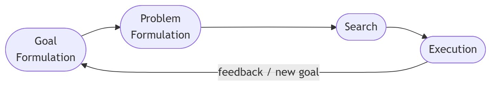
Tip
Game relevance: NPC AI follows exactly this loop — perceive the game state, formulate a goal (attack player, reach checkpoint), search for a plan, execute it, and adapt when the environment changes.
Initial State: The agent’s starting point — a complete description of the world at time 0.
Operators (Actions): What the agent can do. Each operator maps a state to a successor state.
\[\text{successor}(s, a) \rightarrow s'\]
Goal Test: Determines whether a given state \(s\) satisfies the goal — either an explicit target state or a property.
Path Cost: A function assigning a numeric cost to a path — typically the sum of individual action step costs.
\[g(n) = \sum_{i} c(s_i, a_i, s_{i+1})\]
The State Space is the set of all states reachable from the initial state by applying any sequence of operators.
Represented as a directed graph: nodes = states, edges = operators.
Note
Solving a problem = searching the state space for a path from the initial state to a goal state.
The state space can be explicit (enumerable) or implicit (generated on demand during search). Most real problems use implicit state spaces — they are far too large to enumerate upfront.
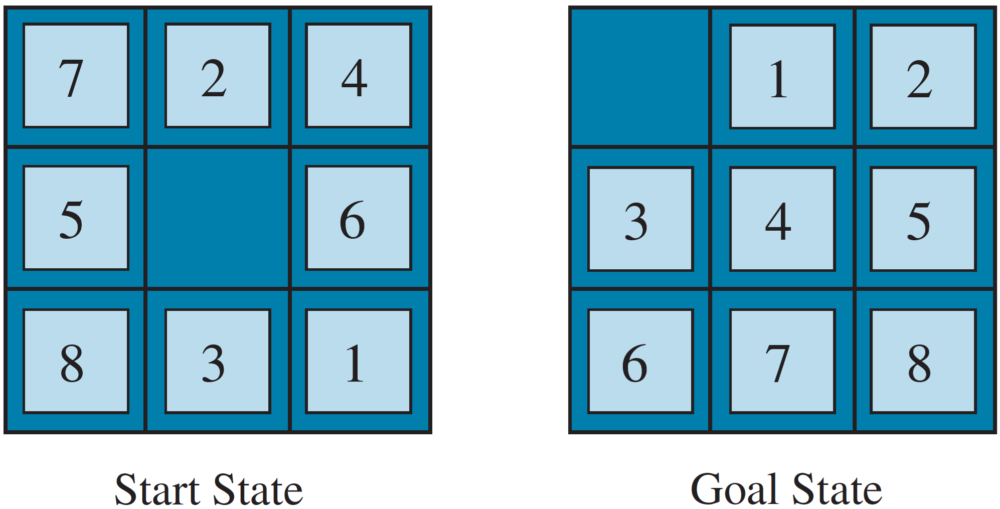
Tip
Why not solve it by hand? The 15-Puzzle (4×4) has \(10^{13}\) states — A* is needed for optimal solutions.
FORTY → 29786
+ TEN → + 850
+ TEN → + 850
------- -------
SIXTY → 31486Note
This is a Constraint Satisfaction Problem (CSP). Backtracking with forward checking is far more efficient than naive search.
\[\text{Total Cost} = \underbrace{\text{Solution Cost}}_{\text{quality of path found}} + \underbrace{\text{Search Cost}}_{\text{time + memory used}}\]
Warning
The fundamental trade-off: an algorithm that finds a shorter path may expand more nodes to do so. An algorithm that expands fewer nodes may return a suboptimal path. No free lunch.
Search builds a tree rooted at the initial state by expanding nodes — generating their successors.
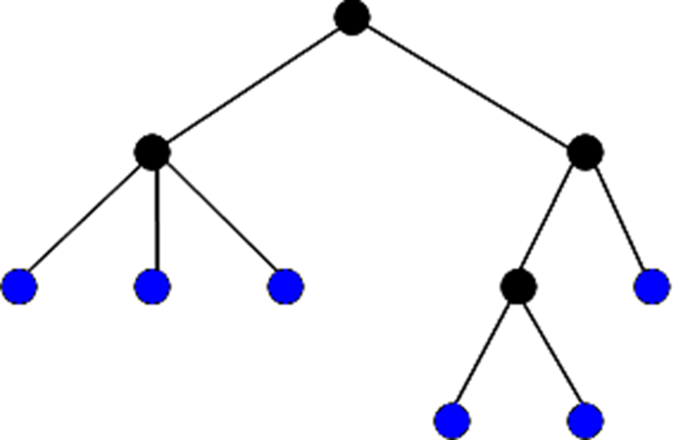
Note
The search tree can be much larger than the state space — the same state may appear in multiple branches. The explored set (closed list) prevents this in graph search.
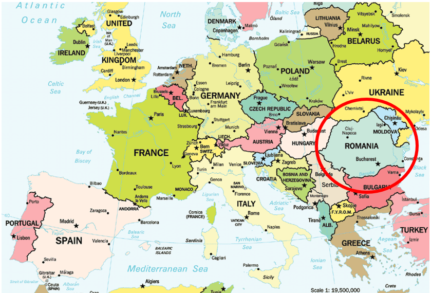
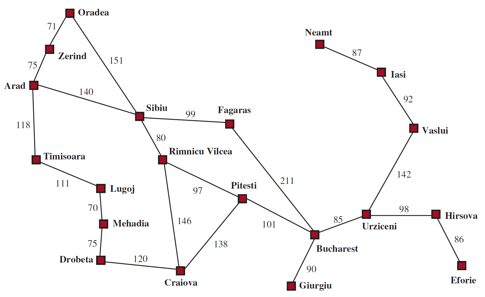
Every search method decides which frontier node to expand next. This is controlled by the choice of data structure:
| Data Structure | Order | Search Method |
|---|---|---|
| Queue (FIFO) | Shallowest first | Breadth-First Search |
| Stack (LIFO) | Deepest first | Depth-First Search |
| Priority Queue (by \(g\)) | Cheapest path first | Uniform-Cost Search |
| Priority Queue (by \(h\)) | Closest to goal first | Greedy Best-First |
| Priority Queue (by \(g+h\)) | Best estimated total | A* |
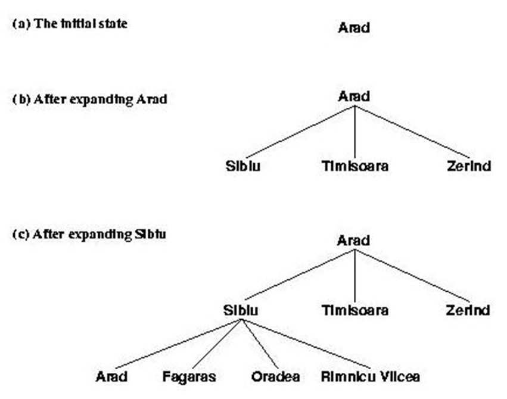
Tree search vs. Graph search:
| Tree Search | Graph Search | |
|---|---|---|
| Explored set | ❌ Not maintained | ✅ Maintained |
| Memory | Lower | Higher |
| Duplicate states | May revisit | Never revisits |
| Preferred for | Finite acyclic spaces | General graphs |
Standard parameters:
No additional domain knowledge — explores based on structure alone.
Uses domain knowledge via a heuristic \(h(n)\) to guide expansion.
def graph_search(problem):
frontier = PriorityQueue([Node(problem.initial_state)])
explored = set()
while frontier:
node = frontier.pop() # ← ordering defines the method
if problem.goal_test(node.state):
return solution(node)
explored.add(node.state)
for child in expand(node, problem):
if child.state not in explored | frontier:
frontier.add(child)
return failureNote
The only difference between search methods is how frontier.pop() selects the next node — i.e., the ordering criterion of the priority queue.
Expands nodes level by level: all states at depth \(d\) before any state at depth \(d+1\).
Uses a queue (FIFO) for the frontier.
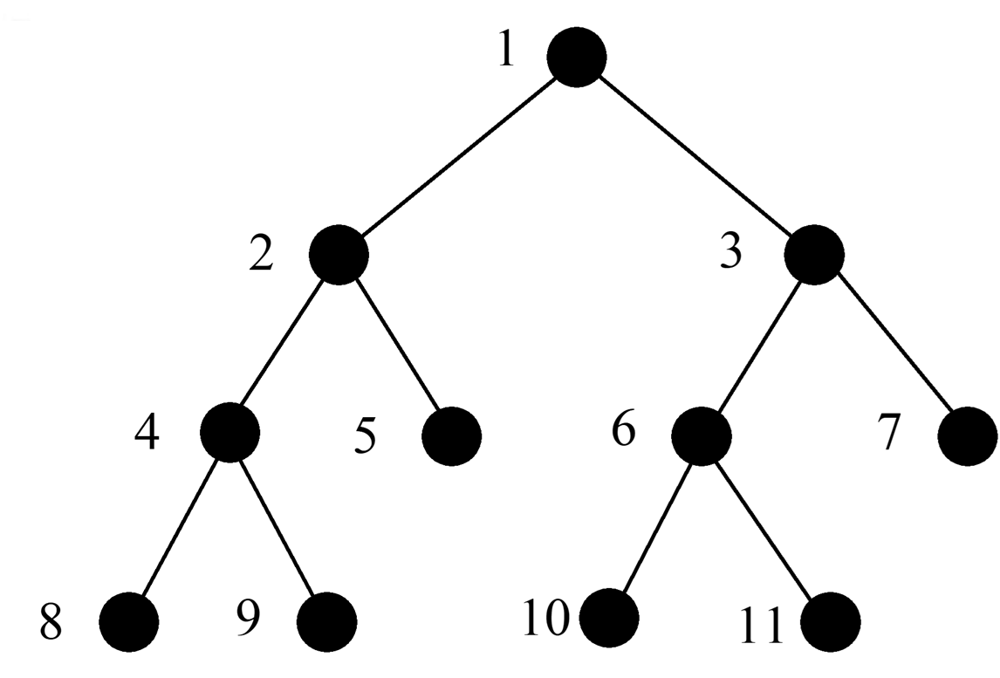
| Property | Value |
|---|---|
| Complete | Yes (if \(b\) is finite) |
| Optimal | Yes, if all step costs are equal |
| Time Complexity | \(O(b^d)\) |
| Space Complexity | \(O(b^d)\) — the critical bottleneck |
Warning
Memory is the killer. BFS must store all nodes at the current frontier level. At depth \(d=12\), \(b=10\): over \(10^{12}\) nodes — terabytes of RAM.
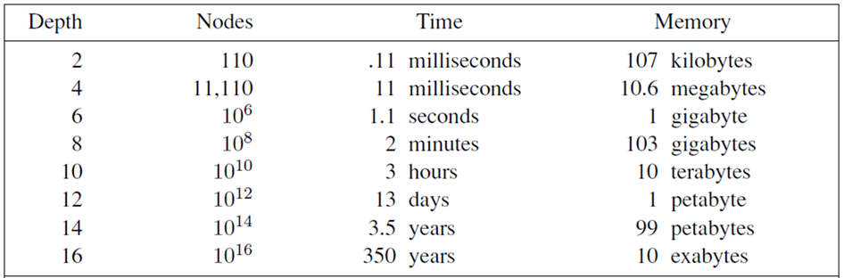
\(b = 10\); 1 million nodes/second; 1000 bytes/node
| Depth | Nodes | Time | Memory |
|---|---|---|---|
| 2 | 110 | 0.11 ms | 107 KB |
| 4 | 11,110 | 11 ms | 10.6 MB |
| 6 | \(10^6\) | 1.1 s | 1 GB |
| 8 | \(10^8\) | 2 min | 103 GB |
| 10 | \(10^{10}\) | 3 hours | 10 TB |
Always expands the node in the frontier with the lowest path cost \(g(n)\).
| Property | Value |
|---|---|
| Complete | Yes (assuming step costs \(> 0\)) |
| Optimal | Yes — finds least-cost solution |
| Time & Space | \(O(b^{1+\lfloor C^*/\epsilon \rfloor})\) where \(C^*\) = optimal cost, \(\epsilon\) = min step cost |
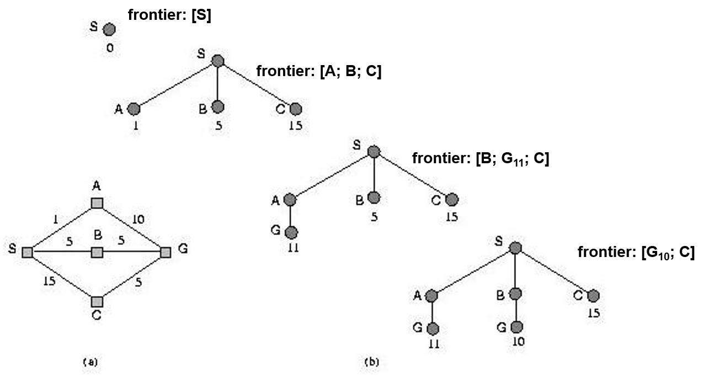
Expands the deepest unexpanded node first; backtracks when reaching a dead end or goal.
Uses a stack (LIFO) for the frontier.
| Property | Value |
|---|---|
| Complete | Only in finite, acyclic spaces |
| Optimal | No — may find longer paths first |
| Time Complexity | \(O(b^m)\) — can be much worse than BFS |
| Space Complexity | \(O(b \cdot m)\) — linear in depth |
Tip
DFS is memory-efficient — it only stores nodes on the current path. This makes it practical when memory is the binding constraint.
Game relevance: DFS underlies backtracking algorithms used in minimax game tree search and constraint solving.
Performs DFS but only down to a predefined depth limit \(l\) — preventing infinite descent.
Complete if \(l \geq d\); incomplete otherwise.
| Property | Value |
|---|---|
| Optimal | No |
| Time Complexity | \(O(b^l)\) |
| Space Complexity | \(O(b \cdot l)\) |
Warning
The challenge: choosing \(l\) without knowing \(d\) in advance. Too small → misses solutions. Too large → wastes time. Iterative Deepening solves this.
Run Depth-Limited Search repeatedly with increasing depth limits: \(l = 0, 1, 2, \ldots\) until a goal is found.
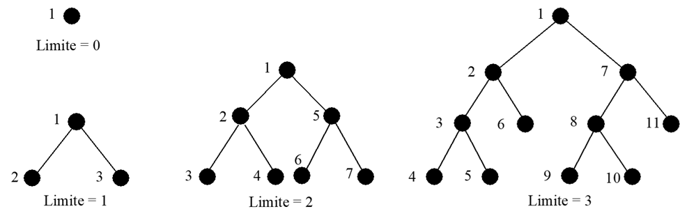
| Property | Value |
|---|---|
| Complete | Yes |
| Optimal | Yes (uniform step costs) |
| Time Complexity | \(O(b^d)\) |
| Space Complexity | \(O(b \cdot d)\) — linear, like DFS |
Tip
Best of both worlds: BFS’s completeness and optimality + DFS’s linear memory. Preferred uninformed method for large, unknown-depth state spaces.
Doesn’t re-expanding nodes waste time?
DFS single pass (\(d=5\), \(b=10\)): \(\;\; 1 + 10 + 100 + 1000 + 10000 + 100000 = 111{,}111\)
IDS cumulative re-expansions:
\[(d+1)\cdot 1 + d\cdot b + (d-1)\cdot b^2 + \ldots + 1\cdot b^d\]
\[= 6 + 50 + 400 + 3000 + 20000 + 100000 = 123{,}456\]
Note
Only ~11% overhead — negligible given the dramatic memory savings. Upper nodes are re-expanded many times but there are exponentially fewer of them.
Simultaneously searches forward from the initial state and backward from the goal, stopping when the two frontiers meet.
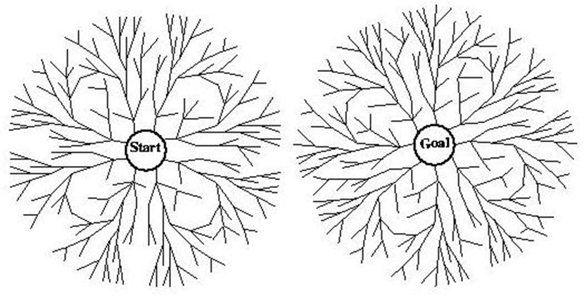
| Property | Value |
|---|---|
| Complete | Yes |
| Optimal | Yes (with BFS or UCS in both directions) |
| Time & Space | \(O(b^{d/2})\) — exponentially better than \(O(b^d)\) |
Requirements and limitations:
Uniform-Cost Search finds the cheapest path — but expands nodes in all directions without any sense of which way the goal lies.
Informed search uses an evaluation function \(f(n)\) incorporating domain knowledge via a heuristic \(h(n)\):
\[f(n) = \text{some combination of } g(n) \text{ and } h(n)\]
The frontier is always ordered by \(f(n)\) — the most promising node is expanded first.
\(h(n)\) estimates the cost of the cheapest path from node \(n\) to the goal:
\(h_1\) — Misplaced Tiles
Count tiles not in their goal position.
Simple, fast to compute, but coarse — does not account for how far tiles are from their goal.
\(h_2\) — Manhattan Distance
Sum of horizontal + vertical distances of each tile from its goal position:
\[h_2(n) = \sum_{i=1}^{8} |row_i - row_i^*| + |col_i - col_i^*|\]
Finer estimate — dominates \(h_1\): \(h_2(n) \geq h_1(n)\) always.
Note
Dominance: if \(h_2(n) \geq h_1(n)\) for all \(n\) and both are admissible, \(h_2\) is always preferred — it expands fewer nodes.
Expands the node closest to the goal according to the heuristic:
\[f(n) = h(n)\]
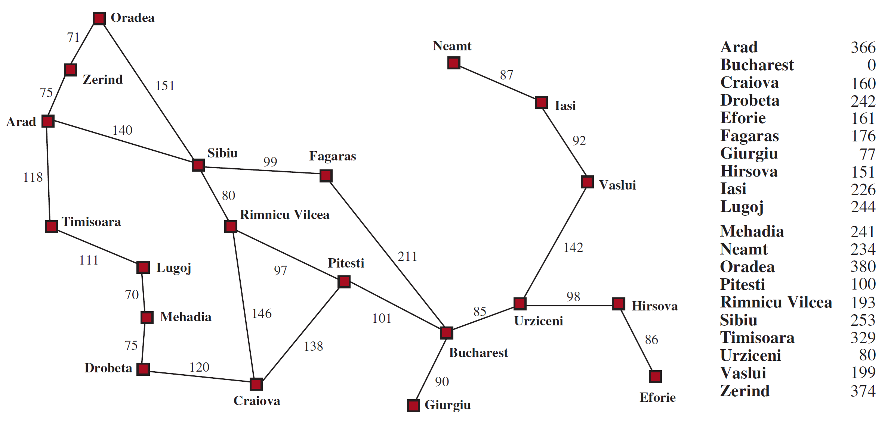
\(h_{SLD}(n)\) = straight-line distance from \(n\) to Bucharest
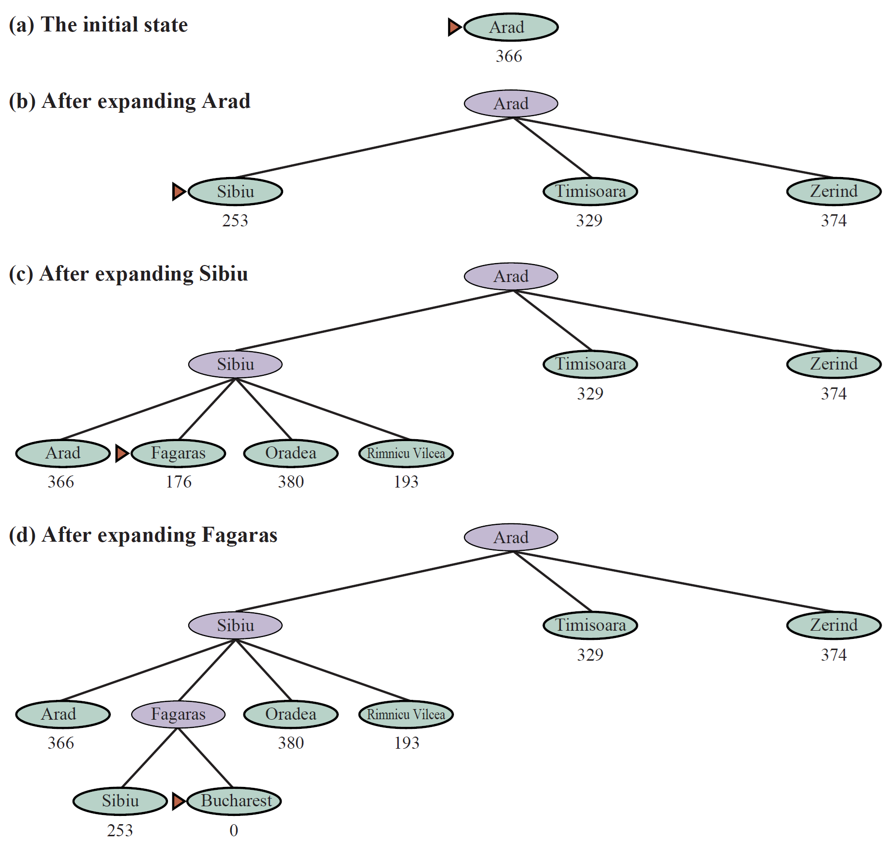
Expands the node with the smallest combined estimate:
\[f(n) = g(n) + h(n)\]
Note
\(f(n)\) estimates the total cost of the cheapest solution through \(n\). A* always expands the node most likely to be on the optimal path.
Admissible heuristic: \(h(n)\) never overestimates the true cost to the goal.
\[h(n) \leq h^*(n) \quad \forall n\]
where \(h^*(n)\) is the true optimal cost from \(n\).
Important
If \(h\) is admissible, A* is complete and optimal on trees. On graphs, consistency is additionally required.
A heuristic is consistent if for every node \(n\) and successor \(n'\):
\[h(n) \leq c(n, a, n') + h(n')\]
This is the triangle inequality for heuristics.
Note
Consistency ⟹ Admissibility (but not vice versa).
If \(h\) is consistent, A* with graph search is optimal — the first time a node is expanded, the path to it is guaranteed cheapest.
Consequence: \(f(n)\) is non-decreasing along any path A* follows — nodes are expanded in order of increasing \(f\) value.
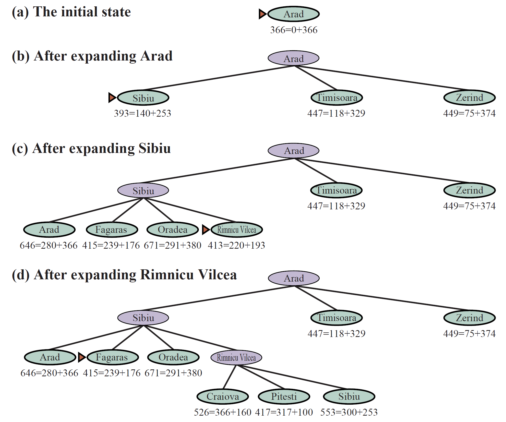
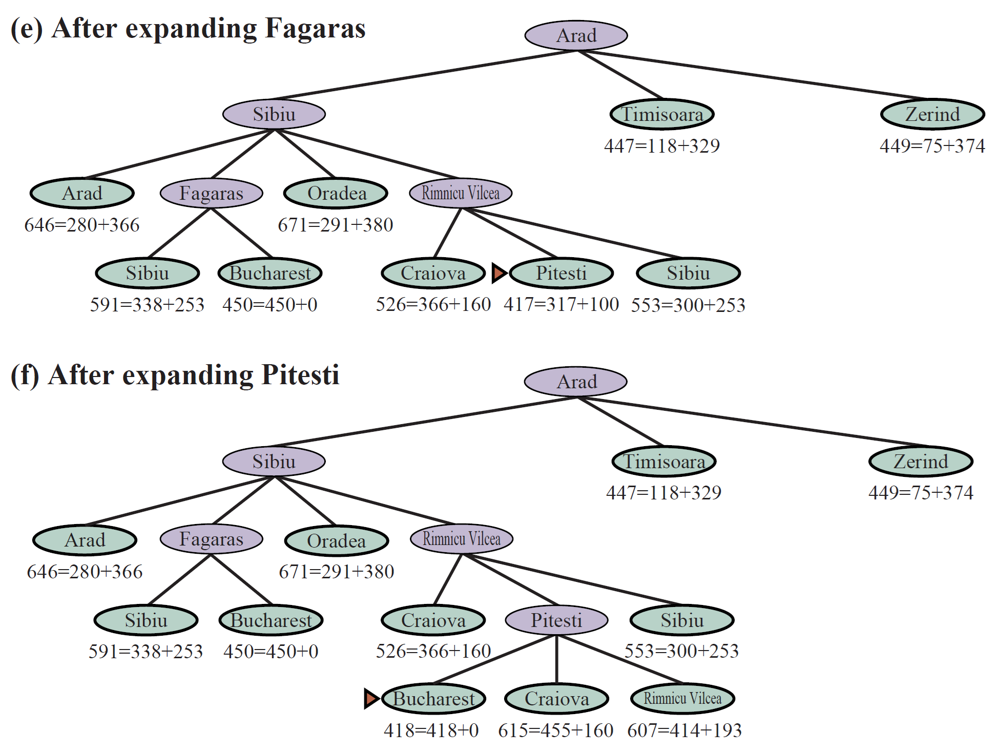
| Width \(W\) | Behaviour |
|---|---|
| \(W = 1\) | Equivalent to Greedy Best-First |
| \(W = \infty\) | Equivalent to A* (full frontier) |
| \(1 < W < \infty\) | Trade-off: memory vs. solution quality |
Tip
Game relevance: Beam Search is used in game AI for dialogue generation, strategy planning, and anytime NPC decision-making under time pressure.
Uses iterative deepening, but the cutoff is on \(f(n) = g(n) + h(n)\) rather than depth:
| Property | Value |
|---|---|
| Complete & Optimal | Yes (admissible \(h\)) |
| Memory | \(O(b \cdot d)\) — DFS-level |
| Re-expansions | Yes — similar overhead to IDS |
Runs A* within a fixed memory budget:
| Property | Value |
|---|---|
| Complete | Yes, if shallowest solution fits in memory |
| Optimal | Yes, if memory is sufficient |
Note
SMA* is the practical choice when you want A* behaviour but must operate within a strict RAM limit.
Admissible
Never overestimates the true cost to the goal.
\[h(n) \leq h^*(n)\]
Non-Admissible
May overestimate — guides search more aggressively.
Warning
Never use a non-admissible heuristic with A* accidentally. Choose deliberately based on whether optimality is required.
A heuristic can be derived by solving a relaxed version of the problem — a version with fewer constraints.
8-Puzzle examples:
| Relaxation | Heuristic |
|---|---|
| Tiles can move to any square (ignore blocking) | \(h_1\) = misplaced tiles |
| Tiles can move through each other | \(h_2\) = Manhattan distance |
| No constraints at all | \(h = 0\) (trivially admissible, useless) |
Note
The optimal solution to the relaxed problem is always an admissible lower bound on the original — because any solution to the original is also a (possibly non-optimal) solution to the relaxed problem.
If you have several admissible heuristics \(h_1, h_2, \ldots, h_k\) that do not dominate each other, combine them:
\[h(n) = \max\bigl(h_1(n),\; h_2(n),\; \ldots,\; h_k(n)\bigr)\]
This composite heuristic is still admissible and dominates each individual \(h_i\), leading to fewer node expansions at no additional cost (just a max operation).
Statistical heuristics are not strictly admissible but are derived empirically from solved instances. They can be faster in practice even if they occasionally overestimate.
Learned heuristics — trained via supervised or reinforcement learning:
Classical search algorithms apply cleanly in environments that are:
Warning
Real-world (and game) environments often violate one or more of these. Extensions are needed: probabilistic planning, partial observability (POMDP), real-time search (LRTA*), continuous action spaces.
Games impose strict time budgets — the AI cannot pause the game to think.
Anytime algorithms return the best solution found so far and can be interrupted at any point:
Monte Carlo Tree Search is the dominant game AI algorithm for adversarial and large-state-space problems:
Tip
Game relevance: MCTS powers AlphaGo/AlphaZero, is used in Civilization, Total War, and many others. It requires no heuristic — it learns value estimates from self-play.
The “intelligence” in informed search partly resides in how the heuristic is designed, not only in the algorithm.
Important
Real intelligence = heuristic design. The hardest part is engineering or learning a \(h(n)\) that guides search efficiently without over- or underestimating systematically.
A poor heuristic can make A* perform worse than BFS — it expands nodes in a misleading order while also paying the overhead of computing \(h(n)\).
| Algorithm | Complete | Optimal | Time | Space |
|---|---|---|---|---|
| BFS | ✅ | ✅* | \(O(b^d)\) | \(O(b^d)\) |
| Uniform-Cost | ✅ | ✅ | \(O(b^{C^*/\epsilon})\) | \(O(b^{C^*/\epsilon})\) |
| DFS | ⚠️ | ❌ | \(O(b^m)\) | \(O(bm)\) |
| Depth-Limited | ⚠️ | ❌ | \(O(b^l)\) | \(O(bl)\) |
| IDS | ✅ | ✅* | \(O(b^d)\) | \(O(bd)\) |
| Bidirectional | ✅ | ✅* | \(O(b^{d/2})\) | \(O(b^{d/2})\) |
| Greedy | ⚠️ | ❌ | \(O(b^m)\) | \(O(b^m)\) |
| A* | ✅ | ✅† | \(O(b^d)\) | \(O(b^d)\) |
| IDA* | ✅ | ✅† | \(O(b^d)\) | \(O(bd)\) |
| SMA* | ⚠️ | ⚠️ | — | bounded |
* uniform step costs † admissible heuristic ⚠️ conditional
AI Applied to Games — ESTG IPLeiria